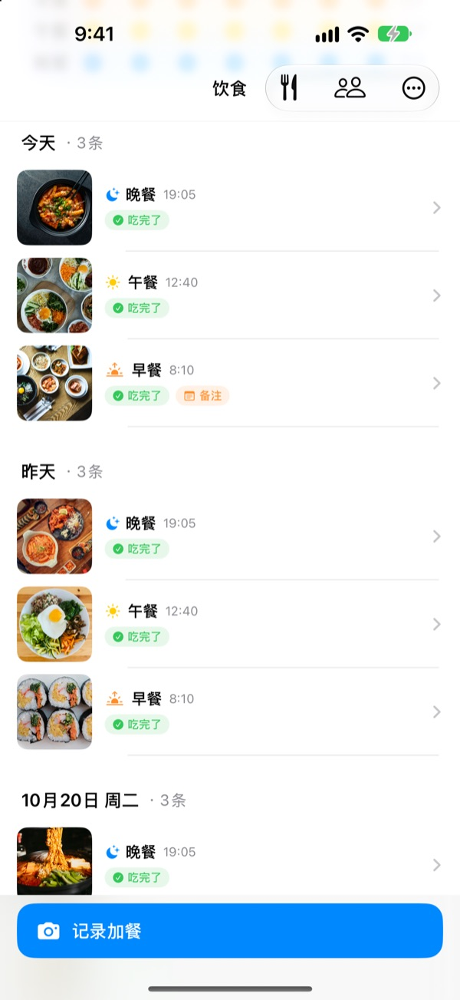
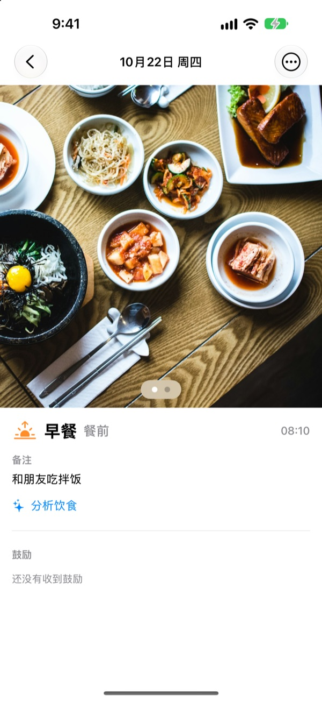
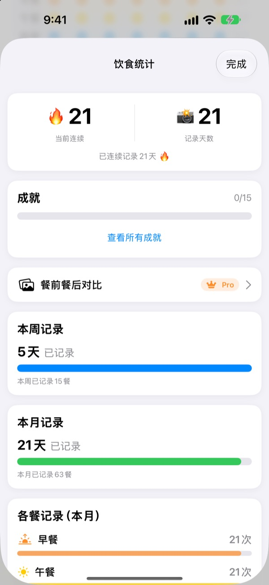
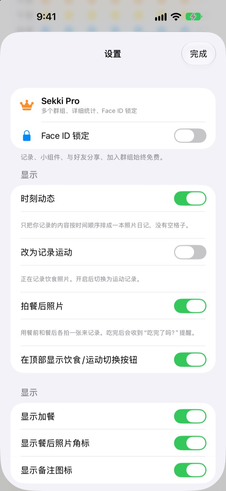

亲手拍一张试试
选一个拍摄时间，再点记录按钮。和 App 里一样，按钮会提前显示这个时间对应的餐。
饮食记录，是不是三天就放弃了？
漏了一顿早餐，忘了一顿晚餐，空格越来越多，看着心烦，最后干脆删掉 App。Sekki 没有空格。只有记下的餐按时间顺序累积，拍一餐，那天就算记录过了。
拍下来，餐就分好了
根据拍摄时间分进早餐、午餐、晚餐或加餐。可以拍餐前和餐后照片，也可以不拍照直接记录，或写个备注。
照片里的食物在设备上免费识别，照片不会离开你的手机。

漏掉也不会减少的记录
一天记一餐，连续记录就能延续，累计记录天数永远不会减少。每周和每月统计显示的是记了几天、几餐，而不是完成率。
“连续7天”“早起鸟”等成就也会一点点收集起来。

只提醒你要记的餐，不用打开 App
自己选择要提醒的餐，用餐时间也能按自己的作息调整。拍好餐前照片后，直接在通知里就能标记“吃完了”。
还能用操作按钮、Siri、快捷指令和主屏幕小组件记录，通过好友码加好友，用表情和评论互相加油。

三步就能开始
- 1
选择要记录的餐
第一次打开时会问你要提醒哪几餐，之后可以在设置里改。
- 2
饭前拍一张
记录按钮上已经写好当前时间对应的餐，点一下、拍一张就完成。
- 3
吃完点一下
在通知或小组件里点“吃完了”，或者补一张餐后照片。
不打开 App 也能记录
- 通知
- 拍完餐前照片后收到的通知里，直接标记吃完了
- 主屏幕小组件
- 查看今天的记录数和正在吃的那一餐，点“吃完了”按钮
- 锁定屏幕小组件
- 以矩形、圆形或单行查看今天的记录
- 操作按钮 · Siri · 快捷指令
- 按一下或说一句，就能记下吃完了
- 存储到“照片”
- 在设置中打开后，饮食和运动会分别存进 Sekki 相簿
- 运动模式
- 运动记录与饮食分开保存，本月运动次数一目了然
小组件上的“吃完了”按钮需要 iOS 17 或更高版本。
记录免费，想看得更深就用 Sekki Pro
免费
- 拍照记录、自动分餐、餐前餐后照片、备注
- 连续记录、累计记录天数、每周每月统计、成就
- 按你选择的餐提醒，不打开 App 也能标记吃完了
- 小组件、操作按钮、Siri、快捷指令
- 与好友分享饮食和运动，用表情和评论加油
- 创建1个小组，加入其他小组不限数量
- 在设备上识别食物
Sekki Pro
- 为家人、同事、运动搭子分别建多个小组
- 把几周前和现在的饮食并排对比
- 汇总你最常吃的食物
- 用面容 ID 或触控 ID 锁定 App
按年或按月订阅，或一次性购买终身版
订阅会自动续期，除非在当前周期结束前至少24小时取消。可随时在“设置”App > Apple 账户 > 订阅中取消。服务条款：m1zz.github.io/RoutineCamera/zh-Hans/terms.html
常见问题
照片存在哪里？
保存在你的设备上。在设置里打开“自动存储到‘照片’”后，也会存进“照片”App 的 Sekki 相簿。“分享我的饮食”打开时（默认打开），照片会上传到 iCloud，方便你添加的好友查看，可以在 设置 > 账户与分享 中关闭。
怎么添加好友？
在好友页面分享你的6位好友码，再输入对方的好友码即可。也可以用逗号分隔，一次粘贴多个好友码。
怎么给好友加油？
打开好友的某一餐，留下表情或简短评论。如果对方还没记录，点一下空着的那一餐，轻轻提醒他记录。
漏了一餐，连续记录会断吗？
不会。那天只要记了任意一餐（包括加餐），连续记录就会延续。即使整天没记，累计记录天数也不会减少。
收不到通知。
请在 iOS 设置 > 通知 中确认已允许 Sekki 的通知，并确认设备已登录 iCloud。用餐提醒时间可以在 App 的设置里修改。
识别食物会把照片发到服务器吗？
不会。识别在设备上完成，照片不会离开你的手机。不限次数，完全免费。
我想删除账户和数据。
在 好友 > 账户 > 注销账户 中即可删除。服务器上的账户和饮食数据会被删除，无法恢复。遇到问题请发邮件告诉我们。
怎么取消订阅？
在“设置”App > Apple 账户 > 订阅 中取消。如果没有在周期结束前至少24小时取消，会自动续期。终身版只需付款一次。
问题反馈、功能建议或账户相关问题，请发邮件至 leeo@kakao.com，或在 Instagram 私信 @lee25_ios。我们通常会在一两天内回复。